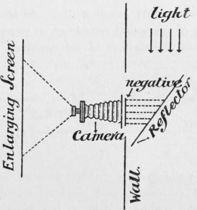

Bromide Printing
Description
This section is from the book "The Barnet Book Of Photography", by Herts Barnet. Also available from Amazon: The Barnet Book Of Photography.
Bromide Printing
Enlarging And Contact Printing With Bromide Papers
IN the following article very little has been said about apparatus, since this is a purchasable quantity. Thus I have been enabled to devote more space to what is not a purchasable quantity—viz. the economical manipulation of the process, in which are included a few general optical principles which govern it for the most effective working.
Enlargements
Of the photographic printing processes in vogue at the present time there is little question as to the beauty of the bromide process. At once possessing a greater range of possibilities than any other, it at the same time is capable in many instances of imitating and often excelling the leading feature in others.
For rapidity of production it has no equal, and with regard to large work is the most economical. The technique of the process is precisely the same as that in negative work, with some slight modifications. The fact that the printed image is latent or invisible should not be regarded by the uninitiated as a deterrent feature, since the exposure and development can be so adjusted as to render the production of a print perfectly under control, the graphic value of the negative being secured in the positive at will.
The printing of enlargements may be carried out by daylight or artificial light, the subsequent manipulations being the same.
Artificial light is preferable, since, the light being a constant, exposures may be recorded and duplicate prints made at any time with certainty as to the exposure; this is impossible with daylight, as the actinic value of the light is never constant even if a north aspect be chosen. I shall, however, give a brief description of the apparatus required for printing with both sources of illumination.
The general principles are as follows :—
The whole surface of the negative is as evenly illuminated as possible, and the image projected by means of a lens on to a screen in a dark room. Fig. i shows a diagrammatic sketch.
Fig. 1.
The sensitive paper is supported on the screen and exposed to the light passing through the negative and lens, a developable positive image thus being obtained. It is not my intention to describe in detail any special form of apparatus for either method of printing, since so much depends upon the opportunities and accessories available to the worker, but rather to give the essential requirements for carrying out the work.
For daylight, a window or an aperture in an outside wall, preferably facing north, is necessary. Against the inside of the wall the back of an ordinary camera is placed, with the negative in the place where the dark slide would be, and a piece of ground glass some two inches in front of it. The glass side of the negative should face the light, and should be inverted. If buildings, trees, or other objects be in such close proximity as to obstruct the light, a reflector must be used, placed at such an angle as to secure the greatest amount of light from the sky ; an angle of 45°* is about the correct position, but it should be made adjustable. The image is thus projected through the lens of the camera on to a screen, which, the camera being a fixture, must be movable. The amplification of the image is unlimited, depending solely upon the definition required. It is hardly necessary to state that no actinic light, except that which passes through the negative and lens, must be admitted into the room. A diagram of the general arrangement of a daylight enlarging apparatus is shown in Fig. 2. There is another form of enlarging apparatus which may be used for either day or artificial light, consisting of a camera body in which the sensitive paper is enclosed; but since the degree of enlargement is limited to the size of the apparatus, and the same work may be done with one's camera in a dark room as described, the possession of such an instrument seems to me totally unnecessary, and not worth describing.
Fig. 2.
For enlarging by artificial light, the apparatus required is rather more elaborate, due to the necessity of some special form of illuminant, and its seclusion from the dark room.
Those who would construct their own lantern should know some of the optical considerations necessary for the most efficient illumination of the negative. As before stated, it is all-important that the negative be as evenly illuminated as possible, and providing this condition be observed, the method of doing it is entirely a matter of choice. But, where it is a question of efficiency rather than economy, we have only one method to adopt j this consists of the use of a condenser.
It is not possible, in the space at my disposal, to enter into the details necessary for the construction of an enlarging lantern, the principles of which are identical with those of an optical lantern; on the other hand the proper manipulation of the instrument is of great importance, and a few general principles which must be adhered to for the most efficient working are necessary. Fig. 3 is a diagrammatic sketch of the principles controlling an enlarging lantern.
Fig. 3.
a is the source of illumination, and for the most effective working should approach as nearly as possible a mere point of light of great intensity ; hence an arc light is the best to work with.
b, the condenser, consists of two plano-convex lenses placed with their convex sides nearly touching. They have for their purpose the condensing or collecting of the rays of the illuminant and projecting them through the negative c to a focus in the centre of the lens d, whence they are transmitted to the screen e.
Now it is essential that the illuminant should be so placed that the rays projected through the negative should come to a focus as near the centre of the objective as possible, otherwise there will be a loss of illumination. In this way the degree of amplification governs the distance from the objective to the negative, and this in its turn governs the distance of the light from the condenser. Fig. 4 will illustrate this.
Fig 4.
Let the hard lines represent the correct position of the illuminant and lens for a certain degree of enlargement, then if a greater degree were required it is obvious that the distance between the lens and the condenser would be less; therefore, in order that the whole of the rays collected by the condenser may pass through the lens, the focus of the light on the lens side must be altered, and this can only be done by increasing the distance of the light from the condenser, as illustrated by the dotted lines. This is a most essential point in the effective working of a lantern, and when the position of the lens is found for the size ot enlargement required, the carrier containing the negative should be removed, and the position of the light found by adjusting it till it gives a clear evenly illuminated disc on the screen. With regard to the various parts of the apparatus a few brief words will suffice to guide the worker in his choice of an instrument.
Continue to:
- prev: Washing
- Table of Contents
- next: The Illuminant
Tags
paper, print, negative, exposure, lens, development, camera, focus